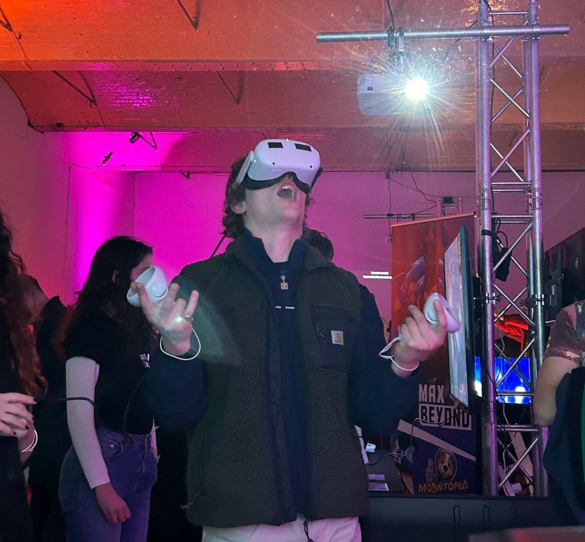
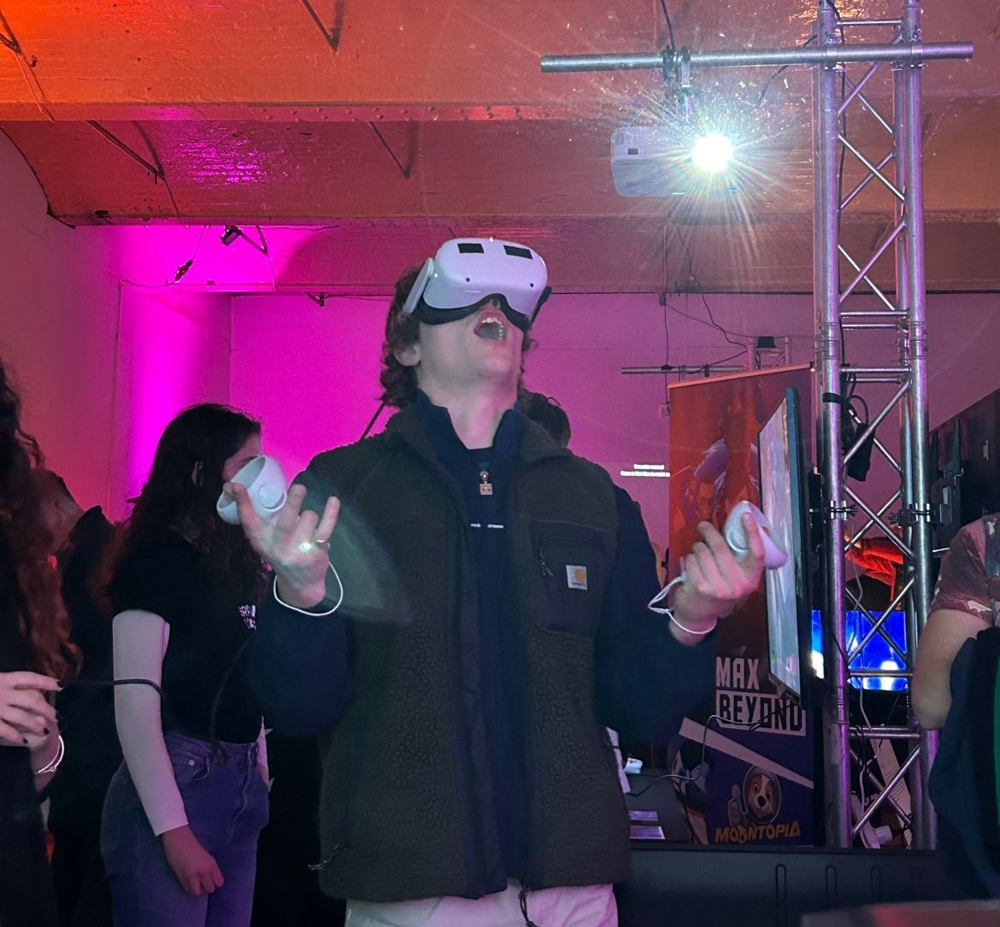

Rosie Connolly
I'm a VR researcher interested in all forms of creative technology!
My current research areas include virtual navigation, social proxemics and perception of AI-driven agents.
Firing on all cylinders...

I'm a VR researcher interested in all forms of creative technology!
My current research areas include virtual navigation, social proxemics and perception of AI-driven agents.
Created by Rose Connolly, Marcia Marques, Vasiliki Karathansi, Brad Lee and Audrey Kurniawan
"Lost in the Retroverse" is a Virtual Reality experience that takes you through the grief of losing a loved one and immerses you in the nostalgia of iconic video games like Tetris, Super Mario, and Pacman. Inspired by the most iconic games of the 80s, it presents the adventure of Alex, a teenager who experiences the loss of his father but soon discovers Retroverse: a dimension that keeps his father's memory alive. Lost in the Retroverse is comprised of a variety of creative components: Narrative, 3D Modelling, Game Mechanics and User Interactions, Audio, Graphic Design and Illustrations.
View the playthrough!As seen at:
 

My first paper was accepted at IEEEVR in the journal track (TVCG) 2025. In this study I explore the impact of teleportation on interpersonal distance in social interactions with embodied conversational agents.
This work was also presented in the poster track of EWIC 2024.
Visit the project page.Created for European Researchers’ Night 2025, this immersive VR Portfolio explores the evolution of user interfaces from 2D to 3D. This immersive experience showcases creative technologies within a dynamic 3D environment.
Trinity College Dublin
Trinity College Dublin
Trinity College Dublin
Teaching Assistant for CS7025 Programming for Digital Media
Salesforce, Network Security Team
Trinity Career's Service
PRO for TCD Sense Project